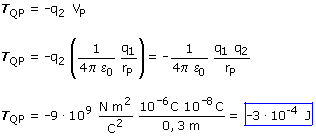

a) El trabajo del campo es igual a la variación de energía potencial cambiada de signo: El potencial eléctrico en el infinito es cero, así que resulta:  Un trabajo negativo significa que el campo eléctrico se opone a este desplazamiento. Por tanto para traer la carga q2 hasta P, un agente externo tendrá que hacer un trabajo de 3·104 J |